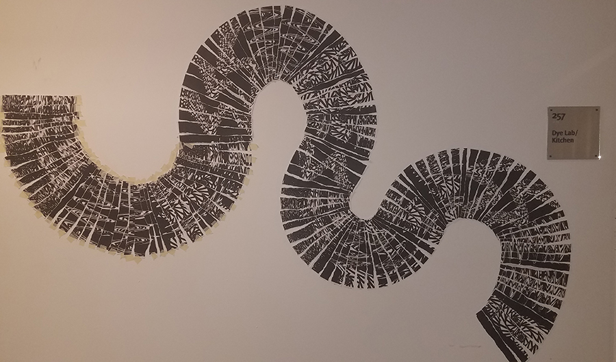
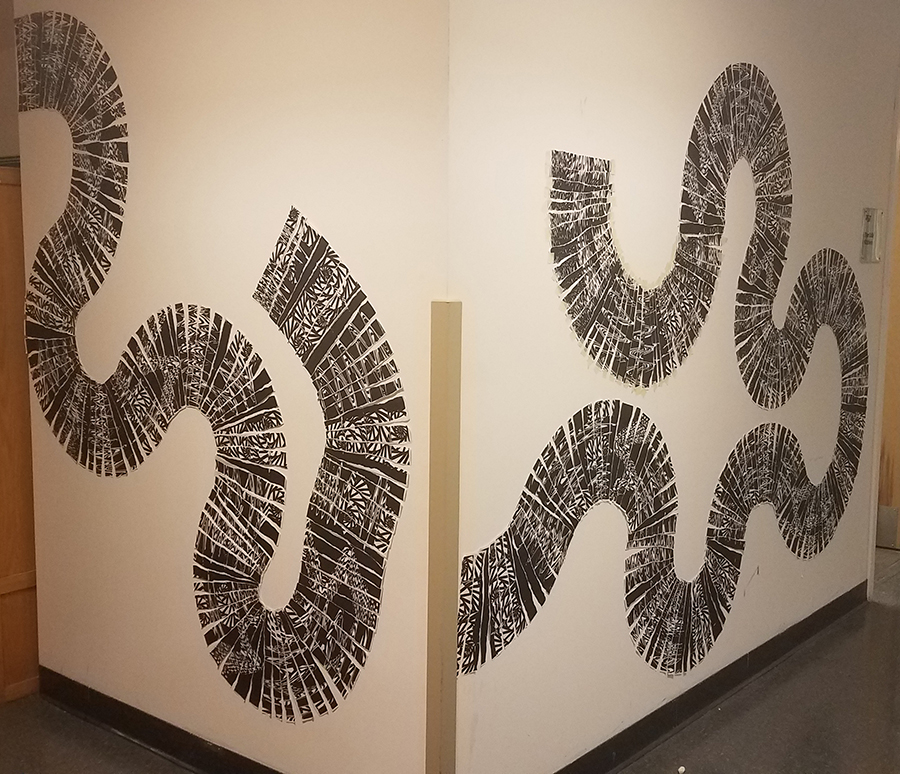

Brynn Vasil

"Somebody"
Love Over Powers hate, or "LOPH", is a clothing brand started by Kellie Irving. The above design was created for her pieces .


"20ft Line"
These images are some process pictures of a 20ft line instillation demonstrating 50/50 contrast.


"Dead Pics"
These photo represent death in some way and were used for a slideshow.